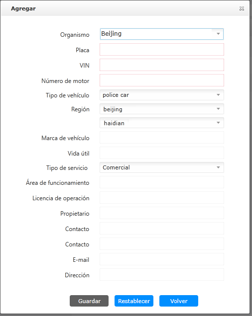

| 1. | En la interfaz principal del vehículo, seleccione una organización en “Organismo del vehículo”, haga clic en el lado derecho de “Lista de vehículos”, abra la interfaz “Agregar”, como se muestra a continuación.

Fig 68 Añadir vehículo Entre ellos, los datos de “Organismo”, “Región” se derivan de la organización del vehículo agregada en la lista de organización del vehículo; los datos de “Tipo de vehículo” se derivan del tipo de vehículo agregado en la página de administración de configuración bajo la función de administración
del sistema.
|
| 2. | Ingrese la información del vehículo de acuerdo con la situación real. |
| 3. | Haga clic en 〖Guardar〗. Se agrega una nueva información del vehículo a la interfaz del vehículo.
|